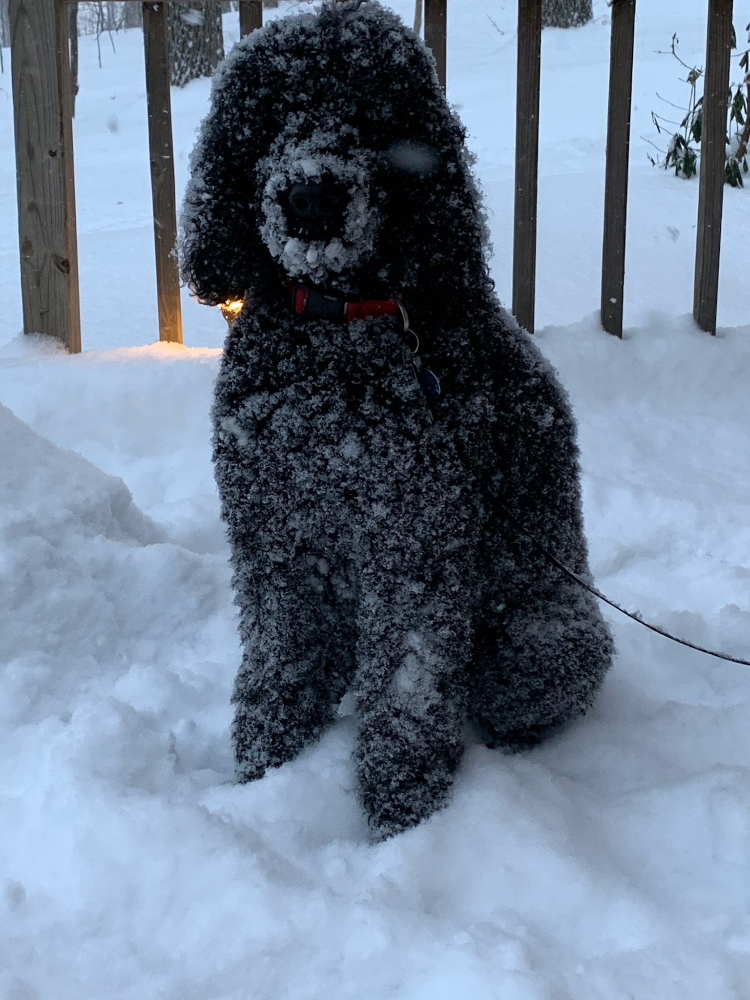
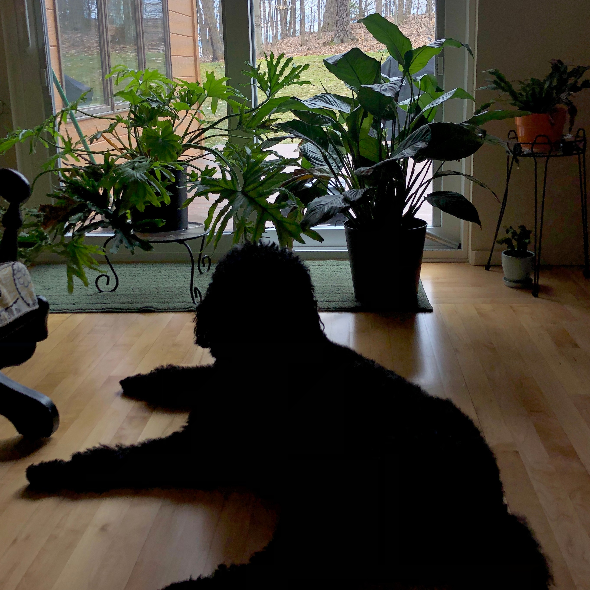
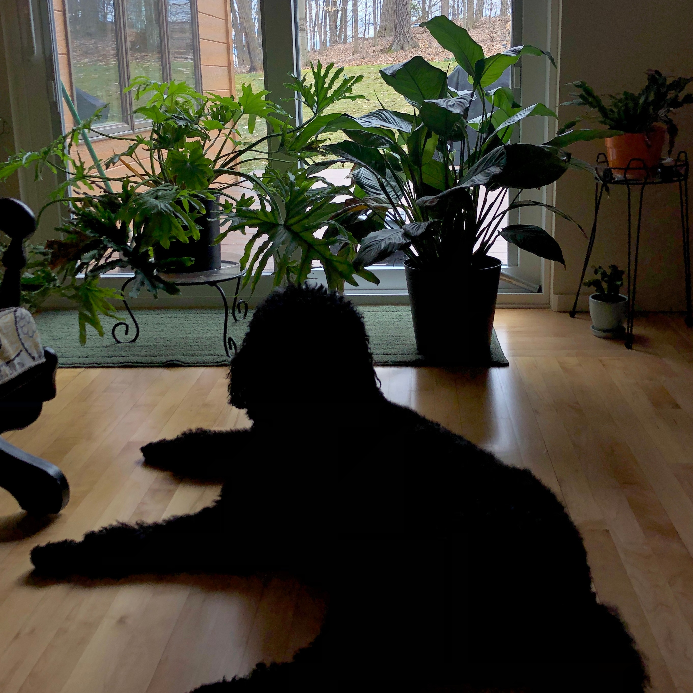
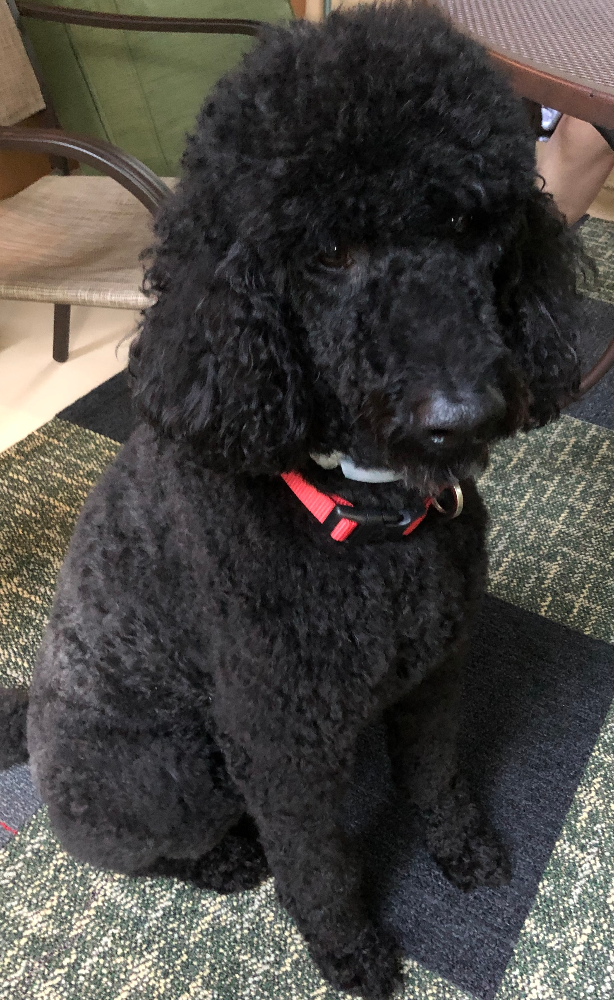
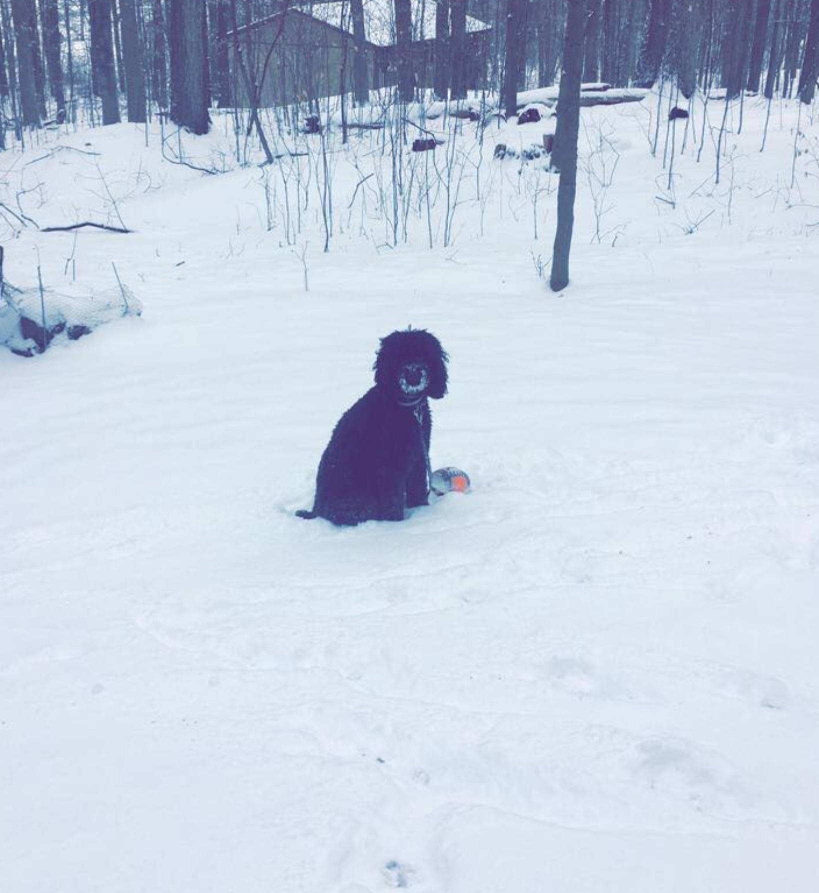
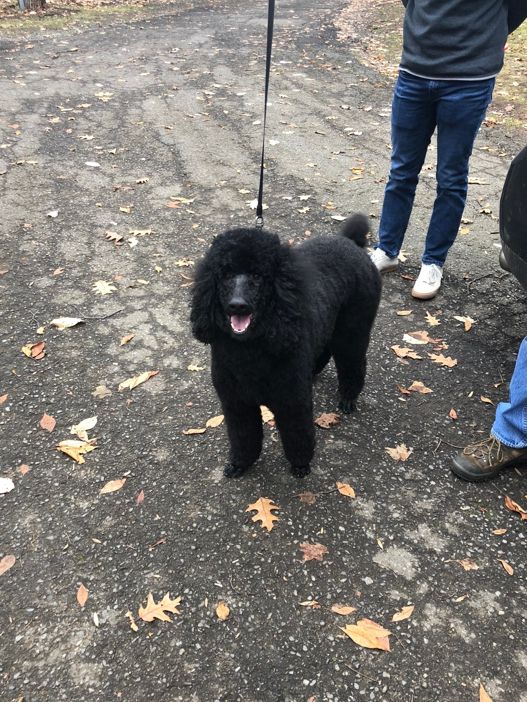
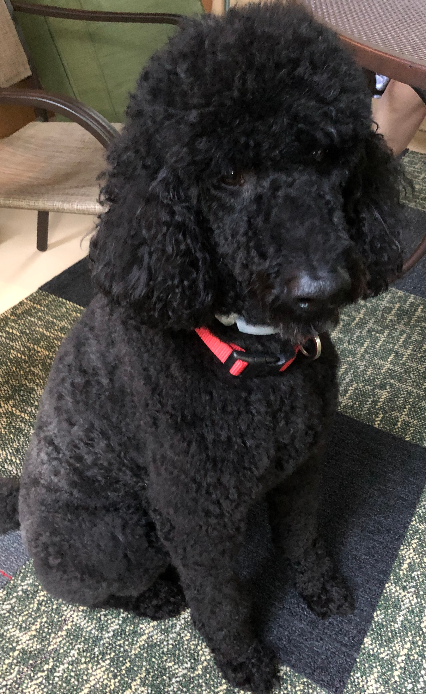
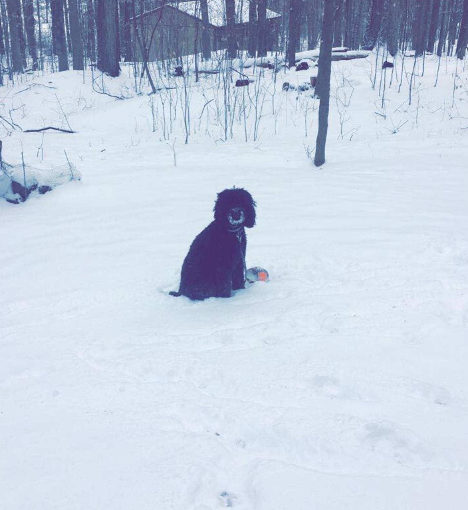
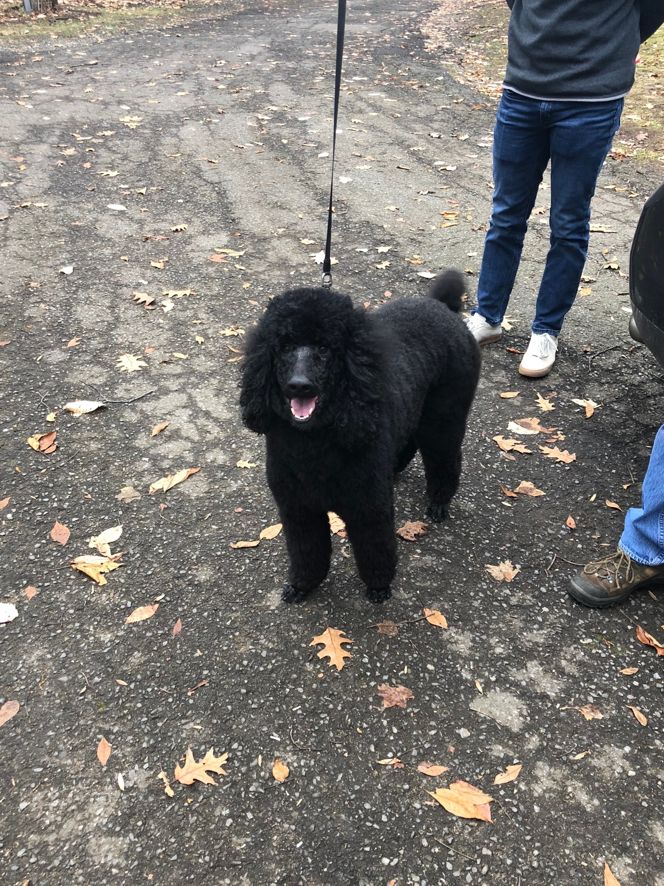

Emily Weed
My Personal Website
Oliver
 He is my 7 year old standard poodle. I may be a little biased but I think he is the best dog. He loves the snow and being able to run free in our backyard and on the trails behind our house. His favorite spot to lay is on the couch, preferably on someone's lap, even though he has many many beds. His favorite snacks include apples, carrots, and any human food that is not being attended to.
 

 




